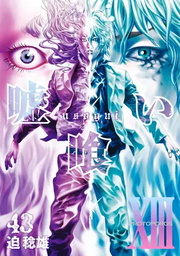

| Quick Facts | |
|---|---|
 | |
| Season: | X |
| Contract: | Veteran Special |
| Contractor: | Anatheras |
| Completed: | 5/49 Volumes |
| Format: | Manga |
| Author: | Toshio Sako |
| Date: | 2006-2017 |
| Type: | Seinen |
| Genre: | Gambling, Death Game, Genius |
| Link: | Anilist |
Welcome to my review about Usogui ! This one is a very long series (49 volumes !), and since I didn't really like what it looked like at the beginning, I only read 5 volumes. However, someone told me that the end of the manga was way better than its initial volumes, so I may read it after the other ones I really want to read.
This manga is an anti-hero manga, since the main character, Takaomi, only follows one much more powerful gambler, Madarame or Usogui. The first few chapters are like very classic, they are broken, someone attack them, then they win big because Madarame is smart. But quickly, the story takes a U-turn with the Death Game in the building. It went from a classic gambling manga to 2 guys fighting for their life against professional assassins ? Wonderful ! Let's enjoy this arc of actions, clever moves, impressive mind control and even with character development. Marco makes his appearance, and has a whole past behind him, that is used perfectly by Usogui to help them win against the old man. To be fair, this group of chapter was real nice, even if the outcome was obvious since it was like volume 2 out of 49. There are a few hints that Kekerou staff might become more and more important later, since Yakou takes part in the game too, but nothing much here.
Afterward, we have a pretty boring phase where the main characters wants to act like his big brother, but nothings works, and then everything works because in fact Usogui planned all of this... In short, nothing that caught my eye. Here, it is clarified how Kakerou valuates lives, hold bids and manage danger, but still nothing too important.
The last arc happening in the five volumes is the battle against Sadakuni. This one is a death game, but this time Usogui is really the only one playing, and the others are mere spectators. If the game was interesting, and the outcome well thought, the scenes felt pretty slow, because there was no real stake for the main character, and pretty much nothing was explained for the remaining outside elements. I stopped just before a ranking battle, because I felt that this would be only yet another somehow easy to understand game but complicated cheating and all.
As I said earlier, the characters are pretty simply presented, with the main one being way underpowered compared to the famous guy. I don't really like the way both act. Madarame is somehow predictable in his intelligence, he will always appear where he should be, and thinks about plans as we would expect him to. Takaomi is hesitant, doesn't do anything smart when by himself, and is a mere spectator to most of the events in the manga. Both have no real past, which is normal for Usogui since it's the mystery of the manga, but make Takaomi much more difficult to cling to.
Hopefully, Marco is more interesting in term of character design. His life holds a meaning, and he tries to grow, fighting a chronic weakness and evolving through the help of others. I hope he will become an important character later.
The overall visuals are quite impressive. The faces have very strong expressions, and the environments are full of realism, which helps to blend into the story in the moments of action. Also, the character design is quite cool, each one has a very distinctive trait that helps identifying them, and they all feel different. The covers are okay, but I think they improve a lot in the following volumes, as well as the overall quality of the work. Just look at the cover I chose for the little info box, they all look as insane at some point.
The manga may be a bit gore at times, but interestingly enough, I've never thought that it was too much. Violence is obviously omnipresent in the underground, is it physical or mental violence, and both are easily described in the manga.
I think it is normal for early manga, especially if they are long, to lack a bit of interest in the beginning. I'm sure that if it was only a 10 volumes series, I would feel way more motivated at reading the sometimes boring parts. It's a shame, since I'm sure it's even a good manga, but I'll try this later. Since it still has obvious qualities, I'll rate with a 5/10.